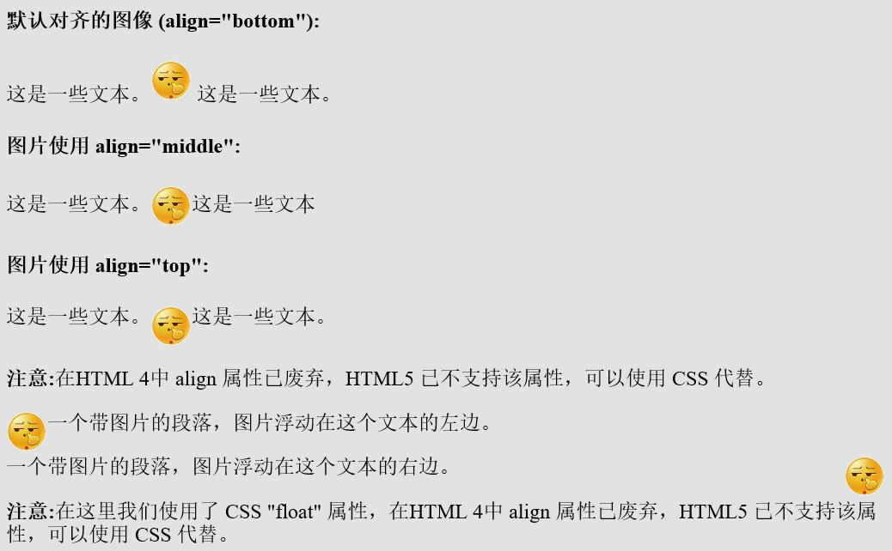
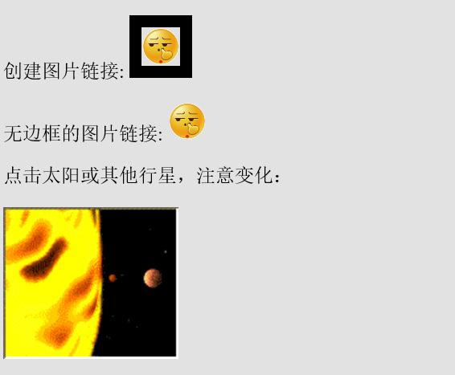

HTML 图像
HTML 图像，在 HTML 中，图像由< img > 标签定义。< img > 是空标签，意思是说，它只包含属性，并且没有闭合标签。要在页面上显示图像，你需要使用源属性（src）。src 指 "source"源属性的值是图像的 URL 地址。
HTML 图像- 图像标签（< img >）和源属性（Src）
在 HTML 中，图像由< img > 标签定义。
< img > 是空标签，意思是说，它只包含属性，并且没有闭合标签。
要在页面上显示图像，你需要使用源属性（src）。src 指 "source"源属性的值是图像的 URL 地址。
定义图像的语法是：
| <img src="url" alt="some_text">
|
URL 指存储图像的位置。如果名为 "lena.jpg" 的图像位于 https://geek.digiasset.org/ 的 html 目录中，那么其 URL 为 https://geek.digiasset.org/html/lena.jpg。
浏览器将图像显示在文档中图像标签出现的地方。如果你将图像标签置于两个段落之间，那么浏览器会首先显示第一个段落，然后显示图片，最后显示第二段。
HTML图像- Alt属性
alt 属性用来为图像定义一串预备的可替换的文本。
替换文本属性的值是用户定义的。
| <img src="boat.gif" alt="Big Boat">
|
在浏览器无法载入图像时，替换文本属性告诉读者她们失去的信息。此时，浏览器将显示这个替代性的文本而不是图像。为页面上的图像都加上替换文本属性是个好习惯，这样有助于更好的显示信息，并且对于那些使用纯文本浏览器的人来说是非常有用的。
HTML 图像- 设置图像的高度与宽度
height（高度） 与 width（宽度）属性用于设置图像的高度与宽度。
| <img src="lena.jpg" alt="Lena Soderberg" width="304" height="228">
|
提示: 指定图像的高度和宽度是一个很好的习惯。如果图像指定了高度宽度，页面加载时就会保留指定的尺寸。如果没有指定图片的大小，加载页面时有可能会破坏HTML页面的整体布局。
基本的注意事项 – 有用的提示：
注意: 假如某个 HTML 文件包含十个图像，那么为了正确显示这个页面，需要加载 11 个文件。加载图片是需要时间的，所以我们的建议是：慎用图片。
注意: 加载页面时，要注意插入页面图像的路径，如果不能正确设置图像的位置，浏览器无法加载图片，图像标签就会显示一个破碎的图片。
HTML 图像标签
|
标签
|
描述
|
|
< **img** >
|
定义图像
|
|
< **map** >
|
定义图像地图
|
|
< **area** >
|
定义图像地图中的可点击区域
|
HTML 图像 更多实例
HTML 图像 – 显示图像
1
2
3
4
5
6
7
8
9
10
11
12
13
14
15
16
17 | <!DOCTYPE html>
<html>
<head>
<meta charset="utf-8">
<title>教程</title>
<base href="https://geek.digiasset.org/html/" target="_blank">
<meta name="description" content="免费在线教程">
<meta name="keywords" content="HTML,CSS,XML,JavaScript">
</head>
<body>
<h2>Lena Soderberg</h2>
<img border="0" src="lena.jpg" alt="Lena Soderberg" width="304" height="228">
</body>
</html>
|
输出结果：
HTML 图像 – 排列图片，浮动图片
1
2
3
4
5
6
7
8
9
10
11
12
13
14
15
16
17
18 | <h4>默认对齐的图像 (align="bottom"):</h4>
<p>这是一些文本。<img src="smile.gif" alt="Smile face" width="32" height="32"> 这是一些文本。</p>
<h4>图片使用 align="middle":</h4>
<p>这是一些文本。<img src="smile.gif" alt="Smile face" align="middle" width="32" height="32">这是一些文本</p>
<h4>图片使用 align="top":</h4>
<p>这是一些文本。<img src="smile.gif" alt="Smile face" align="top" width="32" height="32">这是一些文本。</p>
<p><b>注意:</b>在HTML 4中 align 属性已废弃，HTML5 已不支持该属性，可以使用 CSS 代替。</p>
<p>
<img src="smile.gif" alt="Smile face" style="float:left" width="32" height="32"> 一个带图片的段落，图片浮动在这个文本的左边。
</p>
<p>
<img src="smile.gif" alt="Smile face" style="float:right" width="32" height="32"> 一个带图片的段落，图片浮动在这个文本的右边。
</p>
<p><b>注意:</b>在这里我们使用了 CSS "float" 属性，在HTML 4中 align 属性已废弃，HTML5 已不支持该属性，可以使用 CSS 代替。</p>
|
输出结果：

HTML 图像 – 设置图像链接，创建图像映射
本例显示如何创建带有可供点击区域的图像地图。其中的每个区域都是一个超级链接。
1
2
3
4
5
6
7
8
9
10
11
12
13
14 | <p>创建图片链接:
<a href="https://geek.digiasset.org/html/html-tutorials/html-intro.html">
<img border="10" src="smile.gif" alt="HTML 教程" width="32" height="32"></a></p>
<p>无边框的图片链接:
<a href="https://geek.digiasset.org/html/html-tutorials/html-intro.html">
<img border="0" src="smile.gif" alt="HTML 教程" width="32" height="32"></a></p>
<p>点击太阳或其他行星，注意变化：</p>
<img src="planets.gif" width="145" height="126" alt="Planets" usemap="#planetmap">
<map name="planetmap">
<area shape="rect" coords="0,0,82,126" alt="Sun" href="sun.htm">
<area shape="circle" coords="90,58,3" alt="Mercury" href="mercur.htm">
<area shape="circle" coords="124,58,8" alt="Venus" href="venus.htm">
</map>
|
输出结果：

{kind=link}